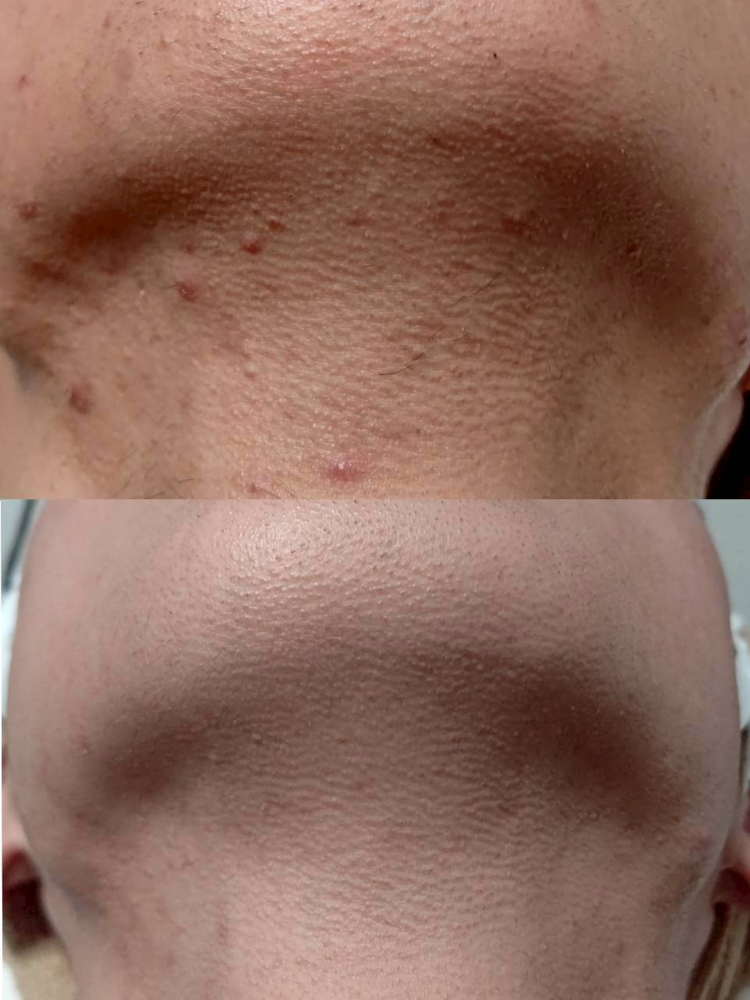

脱毛を卒業したら、毎朝はどう変わる?通い終えた先のリアル

「脱毛が終わったら、実際どのくらい楽になりますか」というご質問を、通い始めたばかりの方からいただくことがあります。今回は、通い終えた先にどんな変化があるのか、これまでのお客様の傾向を踏まえてご紹介します。
毎朝のヒゲ剃りの時間が変わる
ヒゲ脱毛を続けた方の多くが実感されるのが、毎朝の身支度にかかる時間の変化です。剃り残しを気にして鏡を何度も確認する時間や、電気シェーバーの手入れにかかる手間が減ったという声をよく伺います。
肌トラブルへの不安が減る
カミソリ負けやかゆみ、埋没毛といった自己処理にまつわる肌トラブルは、自己処理の頻度が減ることで自然と減っていく傾向があります。「肌荒れを気にせず半袖を着られるようになった」という声も多くいただきます。
身だしなみを考える時間そのものが減る
「今日は剃るべきか」「どのくらい伸びているか」といった、日々考えていたこと自体がなくなるのも大きな変化のひとつです。理学療法士として11年、身体と向き合ってきた代表の山下も、「脱毛は光を当てる作業ではなく、日々の小さな悩みを減らす仕事」だと考えています。
効果の感じ方や通い終えるまでの回数には個人差があります。「自分の場合はどのくらいで変化を感じられそうか」が気になる方は、無料カウンセリングで毛質・肌質を見ながら目安をお伝えしますので、お気軽にご相談ください。